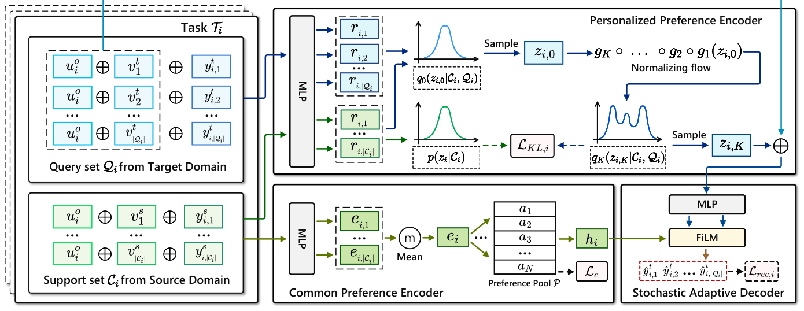

Personalized Multi-Interest Modeling for Cross-Domain Recommendation to Cold-Start Users (面向冷启动用户跨域推荐的个性化多兴趣建模)
- 会议/期刊: ICDE 2025
- 作者与机构: Xiaodong Li, Jiawei Sheng, Jiangxia Cao, Xinghua Zhang, Wenyuan Zhang, Yong Sun, Shirui Pan, Zhihong Tian, Tingwen Liu（中科院信工所、国科大、快手、Griffith University、广州大学）
- 推荐链路定位: 精排（评分预测）
- 研究方向: 跨域与多场景推荐 / 冷启动与长尾推荐
- 论文原文: https://arxiv.org/abs/2604.25732v1
- 开源代码: 暂未开源
TL;DR (1分钟核心速览)
针对跨域冷启动推荐中"EMCDR 共享映射丢失个性化、元学习逐用户建模丢失跨用户共同偏好、且单向量表征无法刻画多兴趣"三大痛点，本文提出 NF-NPCDR：用归一化流（NF）把神经过程（NP）的单峰高斯先验变换为多峰分布以建模个性化多兴趣，用偏好池软聚类捕获跨用户共同偏好，再用 FiLM 式随机自适应解码器融合二者。在 Amazon/Douban 五个跨域场景、20%/50%/80% 冷启动比例下，MAE 相对 SOTA（CDRNP）平均降低约 40%–47%。
Background & Motivation (背景与核心矛盾)
- 主流范式: 冷启动 CDR 分两支——EMCDR 系（EMCDR/SSCDR/DCDCSR/CATN/LACDR）学习用户共享的源→目标映射函数；元学习系（TMCDR/PTUPCDR/CDRNP）为每个用户学用户专属映射函数。
- 前人局限: 其一，共享映射忽略个性化，元学习映射又逐用户独立建模，丢弃了不同用户间的共同偏好（如两用户都爱奇幻书→都爱奇幻电影，可互为信息补充）；其二，两类方法都把用户偏好压成单一确定性表征，无法表达多兴趣，导致目标域推荐单一化。
- 核心洞察 (Key Insight): NP 天然把用户偏好映射为高斯分布并支持跨域迁移，但高斯是单峰的；而 NF 可通过可逆变换把单峰分布"掰"成多峰分布——多峰恰好对应多兴趣，且熵更高、信息更丰富。
- 本文切入点: 用 NF 增强 NP 得到多峰个性化先验，再叠加一个可学习的偏好池做跨用户软聚类，最后用 FiLM 调制把两路偏好注入解码器。
Method (核心方法设计)
1. 整体框架 (Overall Architecture)
输入为冷启动用户 \(u_i\)在源域的支撑集\(C_i=\{(u_i,v^s_j,y^s_{i,j})\}\)与目标域查询集\(Q_i\)。个性化偏好编码器先用 NP 编码器把\(C_i\)（及训练期的\(Q_i\)）编码为高斯参数\((\mu_i,\sigma_i)\)并重参数化采样\(z_{i,0}\)，再经\(K\)步可逆变换得到多峰隐变量\(z_{i,K}\)；共同偏好编码器把\(C_i\)编码为初等表征\(e_i\)，与偏好池\(P\)做软聚类得到\(h_i\)；随机自适应解码器以\(h_i\)生成 FiLM 调制参数\((\eta^l_i,\delta^l_i)\)，逐层调制\([u_i\|v^t_j\|z_{i,K}]\)的 MLP 隐层，输出评分\(\hat{y}^t_{i,j}\)。训练用重叠用户，测试仅用\(C_i\) 推断冷启动用户。
flowchart TD
A["源域支撑集 C_i"] --> B["NP 编码器: 高斯 (mu, sigma) 采样 z_i,0"]
B --> C["归一化流 K 步可逆变换 -> 多峰 z_i,K"]
A --> D["共同偏好编码器: e_i 与偏好池 P 软聚类 -> h_i"]
C --> E["随机自适应解码器 (FiLM 调制)"]
D --> E
E --> F["目标域评分预测 y_hat"]
2. 关键设计拆解 (Key Designs)
-
NF 增强的个性化多兴趣编码器：痛点在于 NP 的变分后验被假设为对角高斯，单峰无法承载多兴趣。做法是把采样得到的 \(z_{i,0}\)经\(K\)步可逆映射\(g_k\) 变换，并按变量替换公式修正密度： $\(p_K(z_{i,K}|C_i)=p_0(z_{i,0}|C_i)\prod_{k=1}^{K}\left|\det\frac{\partial g_k}{\partial z_{i,k-1}}\right|^{-1}\)$ 直觉：可逆变换保持概率质量守恒，但能把单峰"拉伸折叠"为多峰，使 \(z_{i,K}\)的不同模态对应不同兴趣簇；实验用熵\(\text{Entropy}(z_i)\) 验证多峰性（NF 版熵恒高于 w/o NF 版）。
-
偏好池与共同偏好编码：痛点在于元学习逐用户建模丢失群体共性。做法是维护 \(N\)个可训练软聚类中心\(P=[a_1,\dots,a_N]\)，用 Student's t 分布度量\(e_i\)与\(a_n\)的相似度得软分配\(c_{in}\)，并令\(h_i=e_i+Pc_i^\top\)；再用辅助分布\(D\) 做自训练式 KL 正则： $\(\mathcal{L}_c=\mathrm{KL}(D\|M)=\sum_i\sum_n D_{in}\log\frac{D_{in}}{M_{in}}\)$ 直觉：\(Pc_i^\top\)相当于从"兴趣原型库"中检索该用户的共性成分，\(\mathcal{L}_c\) 通过锐化高置信分配让池中心收敛为可解释的兴趣簇（可视化显示同看《指环王》的用户被分到同一簇）。
-
随机自适应解码器与训练目标：痛点在于两路偏好（随机 \(z_{i,K}\)与确定\(h_i\)）量纲与语义不同，简单拼接难以自适应融合。做法借 FiLM：\(\eta^l_i=\tanh(\mathrm{MLP}(h_i))\)、\(\delta^l_i=\tanh(\mathrm{MLP}(h_i))\)，逐层\(w^{l+1}=\mathrm{ReLU}(\eta^l_i\odot \mathrm{MLP}(w^l)+\delta^l_i)\)，即用共同偏好去"门控"个性化表征。总损失为 $\(\mathcal{L}=\frac{1}{|\Omega_{tr}|}\sum_{i}\left(\mathcal{L}_{rec,i}+\mathcal{L}_{KL,i}\right)+\lambda\mathcal{L}_c\)$ 其中 \(\mathcal{L}_{rec,i}\)为 MSE，\(\mathcal{L}_{KL,i}\)为 NF 修正后的 KL 项（训练期用\(q_K(z_{i,K}|C_i,Q_i)\)对齐先验\(p(z_{i,K}|C_i)\)，测试期无\(Q_i\)时直接从\(p_K(z_{i,K}|C_i)\)采样）。负采样：本文是评分预测任务，无负采样，直接在查询集候选物品上回归；推理开销为\(O(ld^3)+O(Kd)+O(Nd^2)\)，全 MLP 架构，参数量仅 11M–38M，显著低于 PTUPCDR（25M–84M）。
Experimental Setup & Evaluation Protocol (实验设置与评估协议)
- 数据集与预处理: 过滤交互数 \(<5\)的用户/物品（5-core），并剔除源域评分\(<4\) 的噪声交互；按时间戳构造交互序列防穿越。使用全量数据而非子采样。
| 数据集/场景 | #Users(源/目标) | #Overlap | #Items(源/目标) | #Ratings(源/目标) |
|---|---|---|---|---|
| S1 Movie→Music | 123,960 / 75,258 | 18,031 | 50,052 / 64,443 | 1,697,533 / 1,097,592 |
| S2 Book→Movie | 603,668 / 123,960 | 37,388 | 367,982 / 50,052 | 8,898,041 / 1,697,533 |
| S3 Book→Music | 603,668 / 75,258 | 16,738 | 367,982 / 64,443 | 8,898,041 / 1,097,592 |
| S4 Movie→Book | 2,712 / 2,212 | 2,209 | 34,893 / 95,872 | 1,278,401 / 227,251 |
| S5 Movie→Music | 2,712 / 1,820 | 1,815 | 34,893 / 79,878 | 1,278,401 / 179,847 |
- 数据划分与防穿越 (Splitting Strategy): 随机抽取重叠用户的 \(20\%/50\%/80\%\)作为测试冷启动用户（其目标域评分全部移除），其余为训练用户；源域按时间戳排序构造\(C_i\)，防止信息泄漏。
- 排名评测协议 (Ranking Protocol): 非全库排序，而是评分预测协议——对每个测试用户在查询集 \(Q_i\) 的候选物品上预测评分，用 MAE / RMSE 衡量（越低越好），5 次随机运行取均值。
- 对比基线与超参设置: 11 个基线，含单域 TGT、共享映射系 CMF/DCDCSR/SSCDR/EMCDR/CATN/LACDR/RecGURU、元学习系 PTUPCDR、多兴趣 REMIT、NP 系 CDRNP。嵌入维度 \(d=10\)，学习率 0.01，batch 128，MLP 3 层隐层 64；NF 选 Planar flow，步数\(K\in\{2,\dots,16\}\)（最终 S1 取 6，S2/S3 取 4），\(N\in\{10,\dots,60\}\)，\(\lambda\in[0.1,1.0]\)，网格搜索按 MAE 选优。
Key Experimental Results (实验关键数据)
1. 主实验对比 (Main Results)
Amazon 场景（\(\alpha=20\%\)，MAE/RMSE，完整表见原文 Table III）：
| 方法 | S1 Movie→Music | S2 Book→Movie | S3 Book→Music |
|---|---|---|---|
| TGT | 4.4803 / 5.1580 | 4.1831 / 4.7536 | 4.4873 / 5.1672 |
| EMCDR | 1.2350 / 1.5515 | 1.1162 / 1.4120 | 1.3524 / 1.6737 |
| PTUPCDR | 1.1504 / 1.5195 | 0.9970 / 1.3317 | 1.2286 / 1.6085 |
| REMIT | 0.9393 / 1.2709 | 0.8759 / 1.1650 | 1.3749 / 1.9940 |
| CDRNP (SOTA) | 0.7974 / 1.0638 | 0.8846 / 1.1327 | 0.7453 / 0.9914 |
| NF-NPCDR | 0.4348 / 0.8146 | 0.4490 / 0.8511 | 0.3894 / 0.7632 |
| Improv. (MAE) | 45.47% | 48.74% | 47.75% |
Douban 场景（\(\alpha=20\%\)）：
| 方法 | S4 Movie→Book | S5 Movie→Music |
|---|---|---|
| PTUPCDR | 1.6914 / 2.3176 | 1.9116 / 2.5670 |
| REMIT | 1.4628 / 2.0757 | 1.6657 / 2.4962 |
| CDRNP (SOTA) | 0.7350 / 0.9315 | 0.6971 / 0.8937 |
| NF-NPCDR | 0.4236 / 0.4861 | 0.4339 / 0.5012 |
| Improv. (MAE) | 42.37% | 37.76% |
2. 消融实验 (Ablation Study)
\(\alpha=20\%\)，指标为 MAE（括号内为相对完整模型的退化幅度）：
| 变体 | S1 | S2 | S3 | S4 | S5 |
|---|---|---|---|---|---|
| NF-NPCDR (NF+PO+FM) | 0.4348 | 0.4490 | 0.3894 | 0.4236 | 0.4339 |
| w/o NF | 0.4660 (+7.2%) | 0.4606 (+2.6%) | 0.4132 (+6.1%) | 0.4585 (+8.2%) | 0.4671 (+7.7%) |
| w/o PO | 0.4722 (+8.6%) | 0.4689 (+4.4%) | 0.4127 (+6.0%) | 0.4510 (+6.5%) | 0.4574 (+5.4%) |
| w/o FM | 0.4468 (+2.8%) | 0.4561 (+1.6%) | 0.4009 (+3.0%) | 0.4476 (+5.7%) | 0.4513 (+4.0%) |
| w/o NF,PO,FM | 0.4922 (+13.2%) | 0.4865 (+8.4%) | 0.4304 (+10.5%) | 0.4770 (+12.6%) | 0.4899 (+12.9%) |
3. 关键实验发现 (Key Findings)
- NF 是最大增益源，且增益随数据稀疏度放大：去掉 NF 后 S4（Douban 小样本场景）MAE 退化 8.2%，高于 S2 的 2.6%——说明多峰先验在交互稀少时对多兴趣的"补全"作用更关键；熵实验（Fig. 5）进一步证实 NF 版 \(\text{Entropy}(z_{i,K})\) 在所有支撑集长度下恒高于 w/o NF 版。
- 偏好池的共性建模与 NF 互补而非冗余：单独去 PO 在 S1 退化 8.6%，与去 NF 的 7.2% 量级相当，但二者同时移除退化达 13.2%，说明"个性化多兴趣"与"跨用户共性"是两条正交信息通路；软聚类可视化（Fig. 6）显示同看《指环王》的 \(T_2/T_6\)被分到相同簇，而无交集用户\(T_9/T_{10}\) 分配显著不同。
- 对重叠用户稀缺极度鲁棒：在 S1 上，本文用 \(\alpha=80\%\)（仅 20% 训练用户）仍比 CDRNP 用\(\alpha=20\%\)（80% 训练用户）MAE 低 42.34%，即"少 4 倍训练数据仍大幅领先"，归因于 NP 的随机过程建模对支撑集长度不敏感（Fig. 4 中性能随\(|C_i|\) 从 25 降到 5 几乎不降）。
Highlights & Limitations (亮点、对比与审稿批判)
- 与代表作对比 (vs. Prior Work): 与 PTUPCDR 的本质区别是后者用 meta-network 生成确定性用户专属映射，本文用 NP+NF 生成随机多峰映射；与 CDRNP 的区别是后者把多用户交互混为一个任务、易受异质偏好噪声干扰，本文严格按用户切分任务并显式迁移个性化偏好；与 REMIT 的区别是后者用多个确定性兴趣向量，本文用概率多峰分布并额外建模不确定性。
- 可迁移亮点: (1) "NF 增强 NP 先验"这一插件可迁移到任何用变分隐变量做用户建模的冷启动/少样本推荐；(2) 偏好池 + 辅助分布自训练的软聚类范式，可低成本地为任意用户表征补充群体共性信号。
- 审稿级局限批判: (1) 任务是评分预测（MAE/RMSE）而非 Top-N 排序，未报告 Recall/NDCG，也未做全库排序评估，与主流推荐评测口径存在差距；(2) 训练时间显著高于 CDRNP（S2 上 364.6s vs 98.5s，约 3.7 倍），且 NF 步数 \(K\)与\(\lambda\)、\(N\)需按场景网格搜索，超参敏感度虽被作者称为"鲁棒"，但跨场景最优值差异明显（\(K=6\)vs\(K=4\)），工程调参成本不低。
Rating (四维评分)
- 方法创新性 (Novelty): ⭐⭐⭐⭐ （NF+NP 统一用于 CDR 多兴趣建模属首次，多峰先验的物理解释清晰且有熵与案例双重佐证）
- 评估协议与实验扎实度 (Protocol & Experiments): ⭐⭐⭐ （五场景 + 三档冷启动比例 + 11 基线较充分，但仅 MAE/RMSE 评分预测、缺 Top-N 排序与显著性检验）
- 写作与数学规范度 (Clarity & Rigor): ⭐⭐⭐⭐ （ELBO 经 NF 修正的推导完整，复杂度分析到位；但符号表与正文部分记号略冗余）
- 工业落地与复现价值 (Industrial & Practical Value): ⭐⭐⭐ （全 MLP 架构、参数量与显存均低于基线，易部署；但未开源、训练耗时偏高、超参需分场景调）